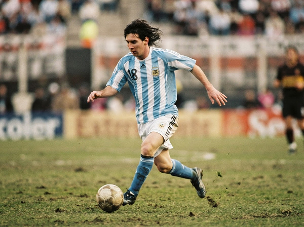
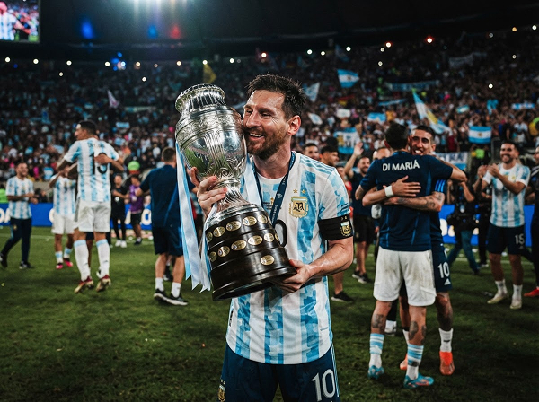
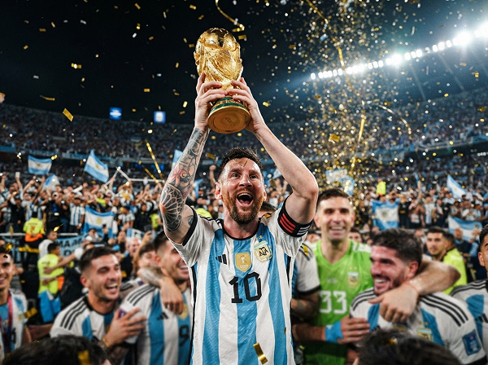

Gracias,
Lionel
Mandale un mensaje de agradecimiento a Lionel
Sumar mi graciasCuando canta uno, cantamos todos.
La bandera en el balcón. La radio del abuelo. La camiseta que pasa de hermano a hermano. Nuestra manera de vivir el fútbol tiene un nombre: estar juntos.
"Esta hinchada no se olvida."
¿Te acordás dónde estabas?
Hay goles que son una dirección, una mesa familiar, una voz en la radio. Estos momentos también son tuyos.

El comienzo
Un pibe. Toda la ilusión.
Con la Sub-20, Leo empezó a mostrar ese talento que ya nos hacía soñar.

La recompensa
Por fin, el abrazo.
La Copa América llegó después de tanto esperar. Y el abrazo fue de todo un país.

La eternidad
La alegría más nuestra.
El capitán levantó la Copa. Y de Ushuaia a La Quiaca, nadie volvió a festejar solo.
Cada hincha tiene algo que decir.
Una anécdota, una emoción, una frase que te salió del alma. Este es el lugar para escribir el mensaje que le mandarías al capitán.
Gracias por enseñarnos a caerse no es el final. Que se puede volver, y volver, hasta abrazar el sueño.
De Rosario
Una hincha
Mi primer recuerdo de un Mundial es tu sonrisa con la Copa. No sé si hay una mejor forma de empezar a querer el fútbol.
De La Plata
Un hincha
En mi casa no festejamos un gol. Nos abrazamos todos. Gracias por regalarnos esos segundos que van a durar toda la vida.
De Mar del Plata
Una hincha
No importa cuándo sea. Vamos a estar.
Por cada gambeta. Por no rendirte.
Por hacernos sentir parte de algo enorme.